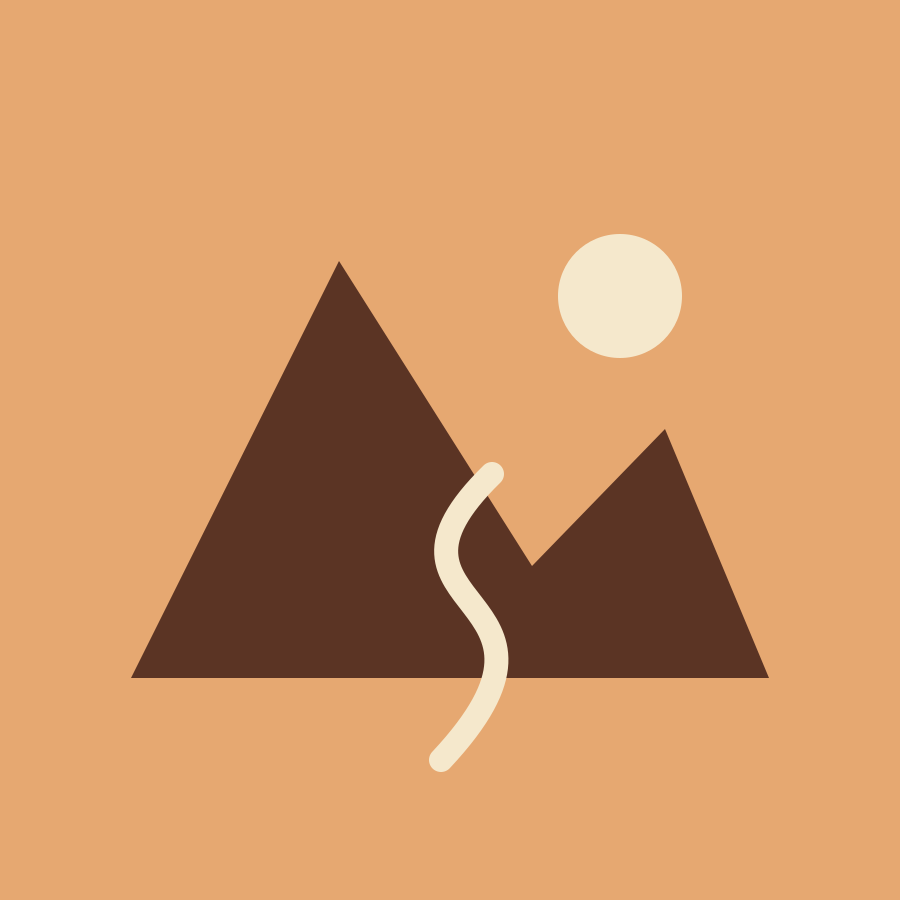
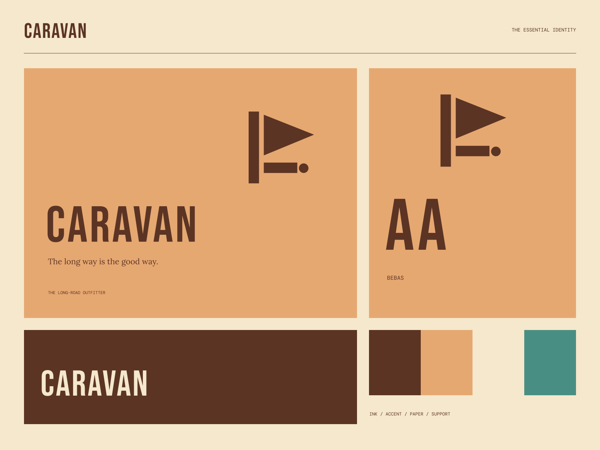

01
Useful on the way
A focused set of things that make a journey feel easier.
GOODS FOR THE ROAD / NOTES FROM THE WAY
The long way is the good way. Made for the scenic approach.

A coherent little world
Made for the scenic approach. The long way is the good way.
01
A focused set of things that make a journey feel easier.
02
Notes for taking a more curious road.
03
Practical design with the warmth of a familiar companion.

The point of view
Winding route illustrations, old road-sign geometry, stitched-looking badge frames, and sturdy condensed lettering. A practical travel world with a richly nostalgic landscape.